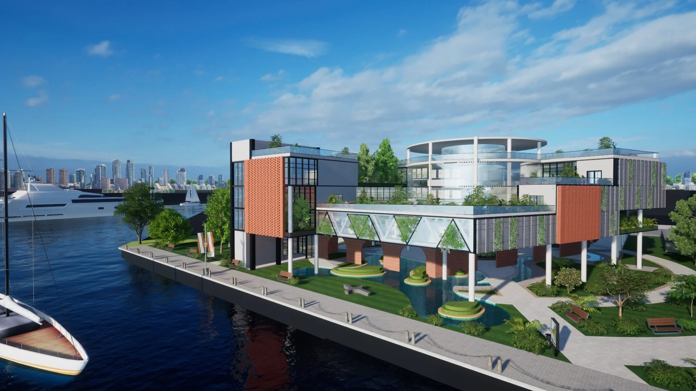

PROJECT 03 · PARKING LOT REDEVELOPMENT (COMPETITION)
Breathing Coastline — Anping Vision Pavilion
Metabolic Central Wind Atrium & Photosynthetic Envelope

Project Overview
Proposing a long-term coastal sustainability masterplan divided into four curatorial pillars: Ecology, History, Vision, and Vibrant Community Life.
Ground-floor porous arches guide sea breezes into the central vertical atrium, driving passive stack ventilation that works with lush vegetation.